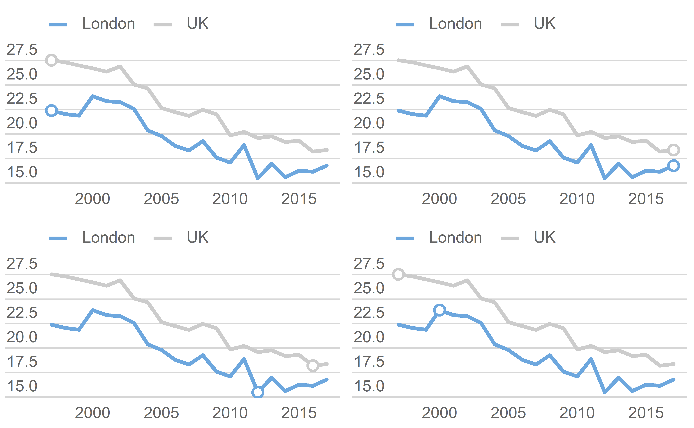
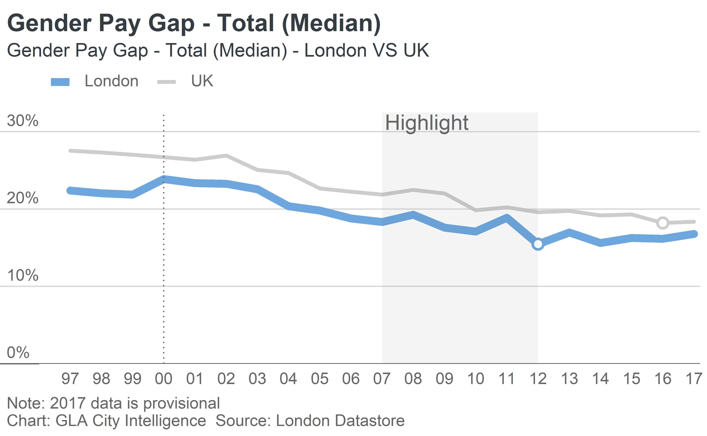
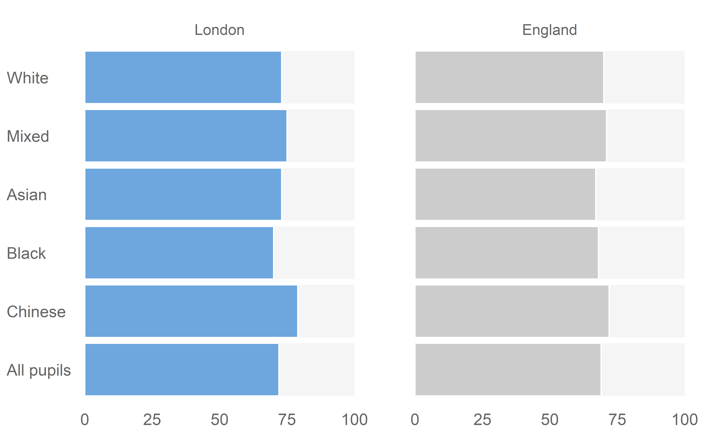
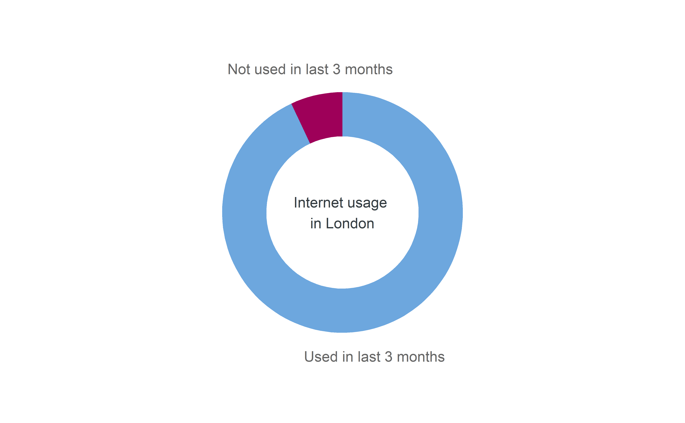

gglaplot contains several functions that take standard ggplot objects/layers and customises them to fit better with our style guide for data vis. Some of these just change some default settings to change the look of a chart, and others create new chart types.
They can be used similarly to ggplot objects, either inheriting aesthetics from an earlier call to ggplot() or having their own aesthetics defined.
As with ggplot() these functions work best with, and are designed for, tidy data.
These are the packages we’ll need:
# For data manipulation library(dplyr) # For plotting library(ggplot2) library(gglaplot) library(grid) library(gridExtra) # For working with dates library(lubridate) # For improving the labelling of our axis library(scales) # For spatial data library(sf) # For markdown table output library(knitr)
And we can set the GLA theme at the start:
All the data used in this vignette is included in the gglaplot package.
Line charts
We’ll use the dataset comparing gender pay gaps between London and the rest of the UK
| Year | location | GPG |
|---|---|---|
| 1997-01-01 | London | 22.39777 |
| 1998-01-01 | London | 22.04301 |
| 1999-01-01 | London | 21.87500 |
| 2000-01-01 | London | 23.87203 |
| 2001-01-01 | London | 23.35938 |
| 2002-01-01 | London | 23.26622 |
Using ggla_line()
ggla_line() is the same as ggplot2::geom_line() except that it uses a round lineend style as default.
pal <- gla_pal(gla_theme = "default", palette_type = "highlight", n = c(1, 1)) plot <- ggplot(data = LDNUK, mapping = aes(x = Year, y = GPG, group = location)) + scale_colour_manual(values = pal) + ggla_line(mapping = aes(colour = location)) + # Adjust the y_label_length parameter as we're going to have multiple charts on one plot theme_gla(y_label_length = 25) plot

Adding emphasis with ggla_highlight()
To highlight particular features of your data you can add emphasis with ggla_highlight(). This comes in 4 simple flavours, “start” and “end”, for highlighting your first or final data point, “min” and “max” for highlighting your minimum or maximum data points.
p_start <- plot + ggla_highlight(aes(colour = location), filter_type = "start") p_end <- plot + ggla_highlight(aes(colour = location), filter_type = "end") p_min <- plot + ggla_highlight(aes(colour = location), filter_type = "min") p_max <- plot + ggla_highlight(aes(colour = location), filter_type = "max") grid.arrange(p_start, p_end, p_min, p_max, ncol = 2, nrow = 2)

ggla_highlight() also includes a more involved xy option for the filter_type argument for cases when you want to pick out a particular value which isn’t covered by start/end etc. This needs to be used along with at least one of the x_filt and y_filt arguments.
plot + ggla_highlight(aes(colour = location), filter_type = "xy", x_filt = ymd("2007-01-01"))
You can also change the geom of ggla_highlight() to add labels. This will probably require a bit of fiddling around with the position_nudge() function to get them in the right place. If we’re labelling our data we might as well remove the legend. GeomGLATextHighlight is a custom gglaplot geom.
plot + theme_gla(legend = FALSE) + ggla_highlight(mapping = aes(label = location), filter_type = "end", geom = GeomGLATextHighlight, position = position_nudge(x = -50, y = 0.5))

Highlighting an area with ggla_highlightarea()
Areas of the graph can be highlighted with ggla_highlightarea()
plot + ggla_highlightarea(xmin = ymd("2007-01-01"), xmax = ymd("2012-01-01"))
Adding lines
Different points in the data can also be highlighted by adding lines
plot + ggla_labelline(x1 = ymd("2000-01-01"))

Extending the y-axis to 0.
If 0 is a meaningful number and the size of the plot allows it, it’s a good idea to include y=0 in your plot. ggla_axisat0 will do this for you, as well as making it stronger than other grid lines.
plot + ggla_axisat0()

Putting it all together with a few other formatting tweeks
ggplot(data = LDNUK, mapping = aes(x = Year, y = GPG, group = location,
colour = location)) +
# Add the ggla_line layer with an added aesthetic controlling
# the thickness of the lines
ggla_line(aes(size = location)) +
# Control the scaling of the thickness, want London (location = 1)
# to be thicker than UK (location = 2)
scale_size_discrete(range = c(6 * mm_to_pt, 3 * mm_to_pt)) +
# Add the palette
scale_colour_manual(values = pal) +
# Add some emphasis to the min values
ggla_highlight(filter_type = "min") +
# Add a context/highlight box between 2007 - 2012
ggla_highlightarea(xmin = ymd("2007-01-01"), xmax = ymd("2012-01-01")) +
# Add an annotation using custom gglaplot geom GeomGLAAnnotate
annotate(geom = GeomGLAAnnotate, x = ymd("2007-02-01"), y = 30.25,
label = "Highlight") +
# Add a line at 2000
ggla_labelline(x1 = ymd("2000-01-01")) +
# Extend the y axis to 0
ggla_axisat0() +
# Format the y-axis
scale_y_continuous(expand = c(0, 0), limits = c(0, 32.5),
labels = dollar_format(prefix = "", suffix = "%")) +
# Format the x-axis
scale_x_date(date_breaks = "1 year", date_labels = "%y",
expand = expansion(mult = c(0.05, 0.01))) +
# Add titles and captions
labs(
title = "Gender Pay Gap - Total (Median)",
subtitle = "Gender Pay Gap - Total (Median) - London VS UK",
caption = "Note: 2017 data is provisional\nChart: GLA City Intelligence Source: London Datastore"
)
Warning: Using size for a discrete variable is not advised.
Bar charts
We’ll use some data comparing Early Years Foundation Stage tests (EYFSP) by ethnicity for London and England
EYFSP %>% kable()
| Ethnicity | Region | eyfsp |
|---|---|---|
| White | London | 73 |
| Mixed | London | 75 |
| Asian | London | 73 |
| Black | London | 70 |
| Chinese | London | 79 |
| All pupils | London | 72 |
| White | England | 70 |
| Mixed | England | 71 |
| Asian | England | 67 |
| Black | England | 68 |
| Chinese | England | 72 |
| All pupils | England | 69 |
ggla_horizbar() makes horizontal bar charts, and can be used stacked or unstacked.
Here’s an unstacked, faceted example:
barplot <- ggplot(EYFSP, aes(x = Ethnicity, y = eyfsp, fill = Region)) + # Add theme with gridlines and legend turned off theme_gla(legend = FALSE) + # Add horizontal bar chart # to100 adds a context bar behind the data up to 100% ggla_horizbar(to100 = TRUE) + # Facet the data by region facet_grid(. ~ Region) + # Add our palette scale_fill_manual(values = pal) barplot

We can add some additional formatting and labels to this
barplot + # Add formatted labels to each bar geom_text(aes(label = paste(format(eyfsp, nsmall = 0), "%", sep = "")), y = 8, position = position_nudge(x = 0, y = 0), vjust = 0.50, colour = gla_default$background) + # Remove any labels from the x axis (effectively our y axis) theme(axis.text.x = element_blank()) + # Add titles labs( title = "Achievement in EYFSP by Ethnicity", subtitle = "Percentage achieving at least the expected standard in all ELGs (2017)", caption = "Source: Department for Education\nChart: GLA City Intelligence" )
And a stacked example:
AvAtt %>% kable()
| Region | Subject | Score |
|---|---|---|
| London | English | 10.6 |
| England | English | 9.9 |
| London | Mathematics | 9.5 |
| England | Mathematics | 9.0 |
| London | English Baccalaureate | 13.6 |
| England | English Baccalaureate | 12.6 |
| London | Open | 15.1 |
| England | Open | 14.9 |
numcats <- AvAtt %>% select(Subject) %>% unique() %>% nrow() pal <- gla_pal(gla_theme = "default", palette_type = "categorical", n = numcats) ggplot(AvAtt, aes(x = Region, y = Score, fill = rev(Subject), label = round(Score, 1))) + theme_gla() + ggla_horizbar() + geom_text(position = position_stack(vjust = 0.85), color = gla_default$background) + theme(axis.text.x = element_blank()) + scale_fill_manual(values = pal, breaks = rev(levels(AvAtt$Subject))) + labs( title = "Average Attainment 8 Scores - 2016/17", subtitle = "Average score per pupil in each element", caption = "Source: Department for Education\nChart: GLA City Intelligence" )

Donut charts
We’ll use some data on internet usage in London to illustrate donut charts
Internet %>% kable()
| locat | usage | numUsers |
|---|---|---|
| London | Used in last 3 months | 6591 |
| London | Not used in last 3 months | 496 |
numcats <- nrow(Internet) pal <- gla_pal(gla_theme = "default", palette_type = "categorical", n = numcats) ggplot(data = Internet, mapping = aes(fill = usage)) + ggla_donut(mapping = aes(label = usage, y = numUsers), stat = "identity", title = "Internet usage \nin London", base_size = 10) + scale_fill_manual(values = pal)

Maps
We’ll use the results of the 2016 EU referendum in London to illustrate putting data on a map.
| Area_Code | Area | Leave | Remain | PropLeave | CatLeave |
|---|---|---|---|---|---|
| E09000001 | City of London | 1087 | 3312 | 24.71016 | 20% - 30% |
| E09000002 | Barking and Dagenham | 46130 | 27750 | 62.43909 | 60% - 70% |
| E09000003 | Barnet | 60823 | 100210 | 37.77052 | 30% - 40% |
| E09000004 | Bexley | 80886 | 47603 | 62.95169 | 60% - 70% |
| E09000005 | Brent | 48881 | 72523 | 40.26309 | 40% - 50% |
| E09000006 | Bromley | 90034 | 92398 | 49.35209 | 40% - 50% |
The leave vote has been separated out into categories for each Borough. The geometry of each Borough is available on the DataStore.
To plot geographical data, you can use the ggla_sf() which is similar to the ggplot::geom_sf() function with different defaults to fit with our style guide. This function works with simple features data, as used in the sf package. The geometry here is polygons, but ggla_sf() works with other geometry types.
# Generate a diverging palette - the edges get a bit dark so the remove margins pal <- gla_pal(gla_theme = "default", palette_type = "diverging", main_colours = c("blue", "red"), n = 6, remove_margin = "both") ggplot(EURef, aes(geometry = geometry, fill = CatLeave)) + ggla_sf() + scale_fill_manual(values = pal) + labs( title = "Leave Vote in the 2016 EU Referendum", caption = "Contains Ordnance Survey data Crown copyright and database right [2015]" )